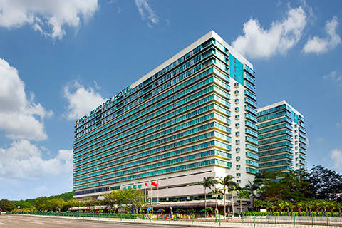
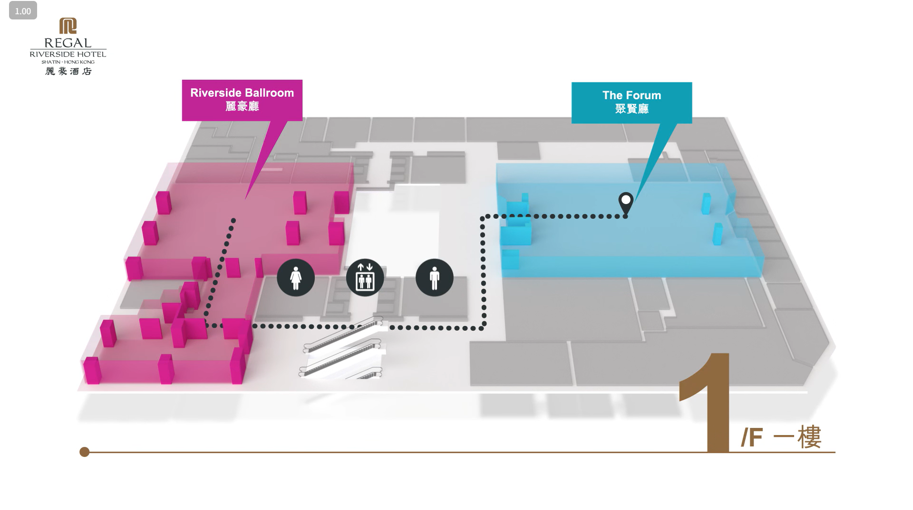

Conference Venue
Regal Riverside Hotel
34–36 Tai Chung Kiu Road, Sha Tin, Hong Kong
ADMA 2026 will be held at the Regal Riverside Hotel in Sha Tin, Hong Kong. Situated along the picturesque Shing Mun River, the hotel offers a tranquil environment amidst lush greenery. Guests can also enjoy a variety of dining options, including Chinese, Western, and Japanese cuisines, ensuring a delightful culinary experience.
Its strategic location provides easy access to major transportation hubs, including Sha Tin Wai and Sha Tin MTR stations, facilitating convenient connections to various parts of Hong Kong. Nearby attractions such as the Ten Thousand Buddhas Monastery, Hong Kong Heritage Museum, Sha Tin Racecourse, and New Town Plaza offer ample opportunities for cultural and recreational activities.


Transportation Modes
By MTR:
- Any station of East Rail Line → Sha Tin Station → bus/taxi →Regal Riverside Hotel
- Any station of Tuen Ma Line → Sha Tin Wai Station → 12-min walk → Regal Riverside Hotel
By Bus and Mini-Bus
- Multiple bus routes, including 299X, 49X, 284, and A41, stop near the Regal Riverside Hotel.
- Green Minibus services also operate from Sha Tin Station to Tai Chung Kiu Road, near the hotel, with a journey time of approximately 1-2 minutes.
By Taxi
For taxi drivers, please show the following address:
English: Regal Riverside Hotel, 34-36 Tai Chung Kiu Road, Sha Tin
Chinese: 沙田大涌橋路34-36號，麗豪酒店
Route Guides
From Hong Kong International Airport
| Transport | Approx. Time | Fare | Remarks |
|---|---|---|---|
| Airport Bus (A41) | ~60 minutes | HK$23.4 |
HongKong International Airport → Regal Riverside Hotel stop Bus frequency: every 15–30 minutes Operating hours: 05:25 – 23:30 |
| Hotel Shuttle Bus |
~50 minutes | HK$130 per person |
Provided by Regal Riverside Hotel Reservation must be made at least 1 day prior to arrival |
| Taxi | ~35 minutes | ~HK$380 |
Passengers could simply tell the driver "Regal Riverside Hotel, Sha Tin". |
From West Kowloon High-Speed Rail Station
Take the Tuen Ma Line from Austin Station to Sha Tin Wai Station. The hotel is approximately a 10-15 minute walk from the station.
Payment Method
The Octopus Card is a versatile electronic payment card that can be easily purchased / topped up in convenience shops, and widely used for public transport, dining, entertainment, shopping and more.
Besides, it's strongly suggested to prepare some Hong Kong dollar in cash even if credit card and other online payment methods (e.g. Alipay, wechat, octopus card) are available in most of places. Prepaid Hong Kong SIM card is also available at airport or convenience shops such as 7-eleven and Circle K.